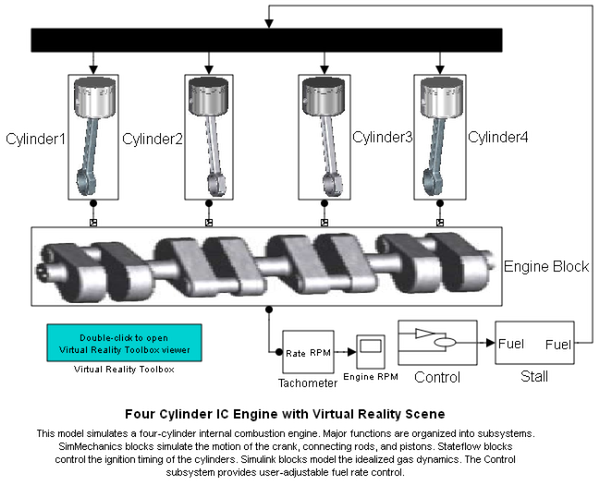
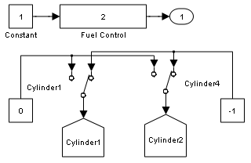
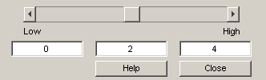

Four Cylinder IC Engine with Virtual Reality Scene
Internal combustion engine with four cylinders, Stateflow logic, and Virtual Reality Toolbox animation.
This model simulates a four-cylinder internal combustion engine. Major functions are organized into subsystems. SimMechanics blocks simulate the motion of the crank, connecting rods, and pistons. Stateflow blocks control the ignition timing of the cylinders. Simulink blocks model the idealized gas dynamics. The Control subsystem provides user-adjustable fuel rate control.
  Warning: When displaying: "mech_fceng_vr/Cylinder4", the expression "crodassm" could not be evaluated. Check that the parameter entries and variables used in the Initialization command are valid MATLAB expressions. Warning: When displaying: "mech_fceng_vr/Cylinder3", the expression "crodassmb" could not be evaluated. Check that the parameter entries and variables used in the Initialization command are valid MATLAB expressions.